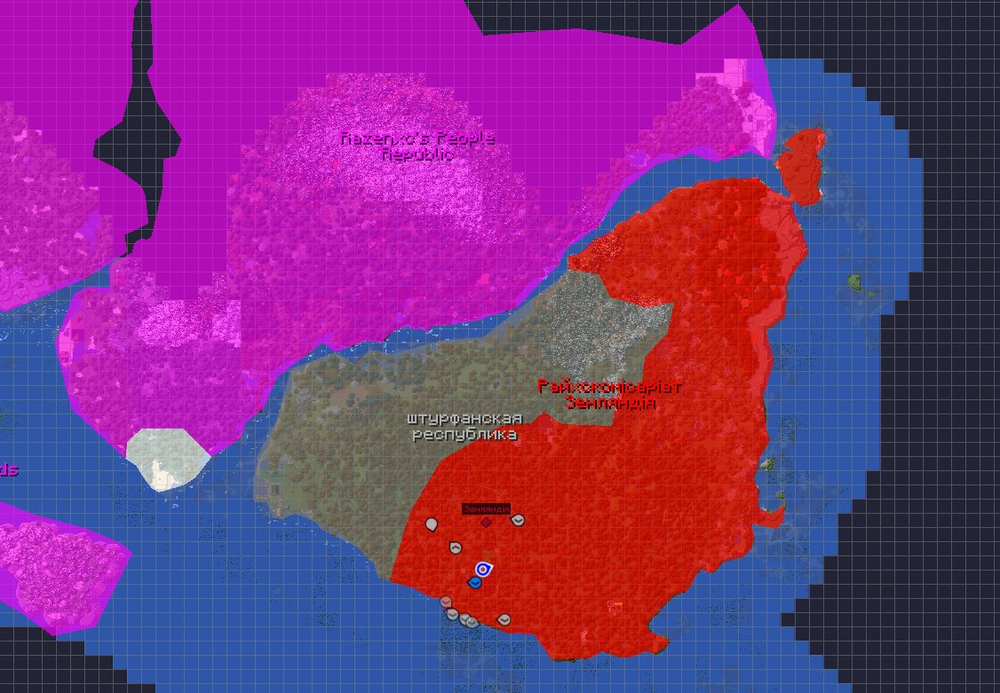
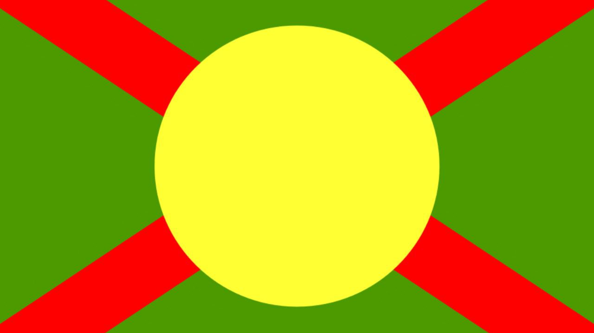
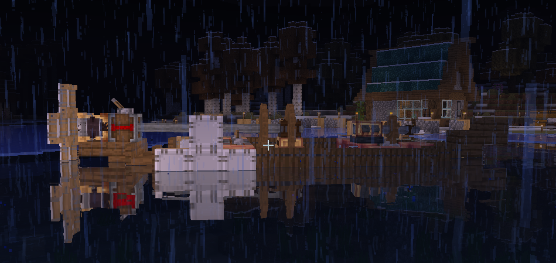

Начало проекта
Всё началось с двух энтузиастов, которые просто хотели поиграть в Майнкрафт и создать что-то своё. Именно risknu и gptdoktor занялись созданием сервера, что заняло около недели. Они разработали сборку, исправили баги и нашли интересный сид для генерации мира. Также большое спасибо Razenxc за помощь в создании сервера.
История I сезона
Мирное начало
В начале было спокойно, за исключением шуток про бомбежку хотиней (небольшая пасхалочка). Мы начали добывать ресурсы, строить первые города и государства. Были основаны такие страны, как Хотинская Народная Республика, Штурфанская Республика, Дунаевская Народная Республика, Британская Империя, Райхкосемириат Зенландия и Claim Razenxc. На сервере были приняты национальные языки, такие как английский в двух республиках. Также началась напряжённая борьба за территории. Каждый хочет прикрепить к себе кусочек земли.
Война "Дунаевская Народная Республика" против "Хотинская Народная Республика"
Участники: ,
Победитель:
Конфликт начался с таинственных поджогов домов и нападений на жителей. Никто не понимал, кто за этим стоит. Это привело к началу конфликта в Хотинской Народной Республике, а затем к спецоперации по уничтожению Дунаевской Народной Республики. Битва продолжалась около часа или 3 игровых дня, и завершилась победой ХНР и приобретением новых территорий.
Индустриальная эра
После войны началась индустриальная революция. Появились двигатели, лодки, нефть, печать денег, а также создание танков, пушек, поездов, автоматов и многое другое. Началась холодная война, заставляющая всех быть настороже и всегда думать о том, чтобы не стать следующей жертвой бомбёжки.
Были построены новые корабли, поезда и многое другое, а также разработаны дизельные двигатели.